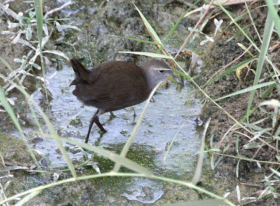

ब्राउन क्रेकBrown Crake
Amaurornis akool · Rallidae · BRD-0252

- Scientific name वैज्ञानिक नाम
- Amaurornis akool (Sykes, 1832)
- Family कुल
- Rallidae
- Hindi हिंदी
- ब्राउन क्रेक
- Local names स्थानीय नाम
- brown crake, crake
- Status here यहाँ की स्थिति
- native
- Movement आवागमन
- Resident, here all year
- Known from कहाँ दर्ज
- Others have published records from the Basti–Ayodhya districts बस्ती–अयोध्या के ज़िलों से दूसरों के प्रकाशित अभिलेख
- IUCN IUCN
- LC
- Review समीक्षा
- audited and independently read
When to look कब देखें
Present all year. साल भर मौजूद।
Tell it apart from इनसे अलग पहचानें
ब्राउन क्रेक / Brown Crake
Amaurornis akool (Sykes, 1832) — Rallidae
ब्राउन क्रेक — यह एक छोटी, भूरी रेल पक्षी है जो पूर्वी उत्तर प्रदेश की नदियों और तालाबों के पास की रीड की घनी बेलों में साल भर रहती है। बहुत सावधान और छिपी रहने वाली, इसे देखना मुश्किल है, लेकिन सर्दी और बारिश में इसकी तीक्ष्ण "किट-किट-किट" आवाज़ सुनी जाती है। यह रीड और पानी की बेलों पर चलते हुए कीड़े और पानी के जानवर खोजता है।
Quick Identification त्वरित पहचान
| Feature | Description |
|---|---|
| Size | Small rail; 23–26 cm long |
| Plumage | Uniform brown above; buff-white underparts |
| Head | Brown with subtle supercilium |
| Bill | Medium, pointed, greenish; adapted for foraging |
| Legs | Long, greenish-yellow; adapted for wading |
| Behaviour | Secretive; creeps through reed vegetation |
| Call | Sharp, repeated "kit-kit-kit" or "kuit-kuit" |
Field tip: In reed beds and dense marsh vegetation, look for a small brown rail creeping through dense growth. More often heard than seen. The sharp, repeated "kit-kit-kit" call, especially at dawn and dusk or during monsoon, is the best clue to its presence. Reluctant fliers; prefer to creep through vegetation.
हिंदी — कैसे पहचानें:
छोटी, भूरी चिड़िया।
रीड की घनी बेलों में छिपा रहता है।
तीक्ष्ण "किट-किट-किट" आवाज़।
हरी-पीली लंबी टाँगें।
Morphology आकारिकी
Biometrics:
| Measurement | Range |
|---|---|
| Total length | 230–260 mm |
| Wing (flattened chord) | 105–120 mm |
| Tail | 50–70 mm |
| Bill | 22–26 mm |
| Tarsus | 35–40 mm |
| Weight | 70–140 g |
Size: 23–26 cm long; wingspan 35–42 cm. A small rail.
Plumage: Upperparts uniform warm brown; crown slightly darker. Supercilium (eyebrow) pale buff, subtle. Lores and eye-region slightly paler buff. Underparts buff-white to whitish, becoming whiter on belly. Undertail-coverts buff. Wings brown with darker flight feathers. Tail brown, relatively short.
Bill: Medium length, pointed, greenish at base, darker at tip. Adapted for probing and gleaning invertebrates.
Legs and feet: Long, greenish-yellow or olive-yellow; four toes adapted for walking on mud and aquatic vegetation.
Eyes: Brown.
Sexual dimorphism: Minimal; females slightly smaller.
Juveniles: Duller brown; buffer below.
Vocalisations. Call repertoire:
- Advertising call: Sharp, repeated kit-kit-kit or kuit-kuit-kuit, given from concealment in reed beds; frequency around.
- Contact call: Soft chirping between pair members.
- Alarm call: Loud, explosive calls when disturbed.
हिंदी: तीक्ष्ण "किट-किट-किट" आवाज़। सुबह और शाम ज़्यादा बोलता है।
Behaviour & Ecology व्यवहार और पारिस्थितिकी
Omnivorous wetland forager: Brown Crakes feed on:
- Aquatic invertebrates (insect larvae, crustaceans, small mollusks)
- Small fish and fish fry
- Aquatic plant material (seeds, shoots)
- Occasionally small frogs and tadpoles
Feeding behaviour: Walk and probe in shallow water and marsh vegetation, gleaning invertebrates from water and vegetation. Dip and pick technique. Feed diurnally.
Social behaviour: Solitary or in pairs; territorial. Highly secretive; skulk in dense vegetation. Rarely seen in open.
Habitat dependence: Strictly dependent on dense reed and marsh vegetation; absent from open water.
Flight: Weak fliers; reluctant to take flight; prefer creeping through vegetation.
Predators: Snakes, jackals, crows, monitor lizards; generally cryptic behavior provides protection.
हिंदी: अकेला या जोड़ी में रहता है। रीड में छिपा रहता है। कीड़े और छोटी मछलियाँ खाता है।
Life Cycle / Phenology जीवन चक्र
Resident breeder: Year-round resident in suitable reed-bed habitats. Breeds during monsoon (June–August).
Breeding: Builds small cup nest in reed vegetation, typically 1–2 m above water.
Non-breeding: Remains in reed beds year-round; numbers increase during monsoon (better breeding habitat) and water flooding.
Moult: Gradual moult; no obvious eclipse plumage.
Vocal activity: Calling increases during breeding season (June–September) and monsoon.
हिंदी: साल भर रहता है। बारिश में अंडे देता है। रीड में घौंसला बनाता है।
Host Plants or Prey आहार
| Prey Type | Examples | Feeding Behaviour |
|---|---|---|
| Aquatic invertebrates | Insect larvae, crustaceans, small snails | Probe and glean from water and vegetation |
| Small fish | Fish fry | Pick from shallow water |
| Aquatic plant parts | Reed shoots, seed heads | Occasional browsing |
| Amphibians | Tadpoles, small frogs | Opportunistic foraging |
हिंदी: कीड़े, केंचुए, छोटी मछलियाँ खाता है। रीड के कोमल भाग भी खाता है।
Predators / Natural Enemies शत्रु
- Avian predators: Ashy Drongo, shrikes, corvids
- Reptile predators: Snakes, monitor lizards
- Mammalian predators: Jackals, wild dogs
- At nest: Snakes, corvids
हिंदी: साँपें, कौवे, सियार इसका शिकार करते हैं।
Agricultural / Human Relevance कृषि प्रासंगिकता
Wetland pest control: Feeds on aquatic insect larvae including mosquito pupae; beneficial for disease control.
Protected status: Protected under the Wildlife (Protection) Act 1972.
Conservation concern: Dependent on reed-bed habitat; wetland loss is a threat.
हिंदी: यह विधि अधिनियम 1972 के अंतर्गत संरक्षित है। मच्छरों को नियंत्रित करता है।
Expected Locally स्थानीय रूप से अपेक्षित
Not a field record. Written from published accounts for eastern Uttar Pradesh. No confirmed local sighting yet — if you have seen it, that is what the atlas needs.
अभी तक स्थानीय पुष्टि नहीं। यह विवरण प्रकाशित स्रोतों से है, किसी अवलोकन से नहीं।
This species is NOT a field record. Based on published sources for eastern UP.
Resident range: Expected year-round in suitable reed-bed habitats where they occur.
Habitat requirement: Dense reed beds and marsh vegetation; absent from open water.
Seasonal occurrence: Year-round; numbers increase during monsoon breeding season.
GBIF records: GBIF holds published records from these districts.
What a first record would be: Sound recording or photograph with GPS coordinates and date.
हिंदी: यह पक्षी स्थानीय रूप से अपेक्षित है। रीड के इलाकों में साल भर रहता है। पहला रिकॉर्ड के लिए आवाज़ का रिकॉर्डिंग या फोटोग्राफ चाहिए।
Distribution वितरण
Global range: Indian subcontinent; resident in suitable wetland habitats.
In India: Distributed throughout in reed beds and marshes.
In Uttar Pradesh: Widespread in reed beds of major wetlands.
In Basti district / eastern UP: Resident in reed-bed habitats along river floodplains; year-round presence.
Research Questions शोध प्रश्न
- What is the current population size and distribution in eastern UP?
- How do seasonal changes in reed-bed water levels affect crake presence and breeding success?
- What is the dietary composition and how does it change seasonally?
- क्या रीड के बिस्तर की कटाई से इस पक्षी की संख्या प्रभावित होती है?
- How do Brown Crakes select nesting sites, and what are the nest predation rates? (A child can listen for and map calling birds.)
- क्या जलाशयों के प्रबंधन और रीड की कटाई नीति से इस पक्षी को लाभ हो सकता है?
Similar Species मिलती-जुलती प्रजातियाँ
| Species | Key Difference | Hindi | Field Rule | |
|---|---|---|---|---|
| Water Cock (Gallicrex cinerea) | Larger (40–43 cm); male black with red face; different habitat | जल-मुर्गा | Water Cock is larger and prefers open water edges; different habitat preference. | |
| Baillon's Crake (Zapornia pusilla) | Smaller (17–18 cm); spotted plumage; less brown overall | छोटी कुरेंट | [[baillons_crake\ | Baillon's Crake]] is much smaller and has spotted plumage. |
Field rule: Brown Crake is a small rail with uniform brown upperparts and buff-white underparts, found in dense reed beds. The sharp "kit-kit-kit" call is diagnostic. Secretive behavior and preference for dense vegetation distinguish it from more open-water rail species.
Taxonomy & Classification वर्गीकरण
Original description. Described by William Henry Sykes in 1832 as Gallinula akool. Type locality is the northern Deccan, India.
Subspecies. Monotypic — no subspecies are currently recognised.
Family and order placement. Order Gruiformes; family Rallidae (rails, coots, crakes).
IUCN status rationale. Least Concern. Populations stable in suitable reed-bed habitats. Adaptable to human-modified wetlands.
हिंदी: भारत में पाई जाती है। साल भर रहती है। आमतौर पर सुरक्षित है।
Photo Gallery फोटो गैलरी
No photos yet — add field photos to media/species/brown_crake/ and run node scripts/sync_photos.js.
Wanted photos:
- Creeping through reed stems
- On exposed perch
- In flight (difficult, due to secretive nature)
- Close-up showing plumage detail
- Sound recording of call
References संदर्भ
- Sykes, W. H. (1832). Description of a new rail from the Deccan. Proceedings of the Committee of Science and Correspondence of the Zoological Society of London 2: 110–111.
- Ali, S. & Ripley, S. D. (1968). Handbook of the Birds of India and Pakistan. Vol. 2 (Warblers to Whydahs). Oxford University Press, Delhi. Pp. 119–121.
- Rasmussen, P. C. & Anderton, J. C. (2005). Birds of South Asia: The Ripley Guide. Vol. 1. Smithsonian Institution Press, Washington, DC. Pp. 72–73.
- Garcia, E. F. J. (2006). Family Rallidae (Rails, Coots and Crakes). In Handbook of the Birds of the World. Vol. 3. Lynx Edicions, Barcelona.
- GBIF Occurrence Data — Amaurornis akool, India.
- IUCN Red List (2023). Amaurornis akool — BirdLife International assessment. IUCN, Cambridge. Status: Least Concern.
Source file: species/fauna/birds/brown_crake.md